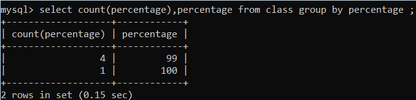
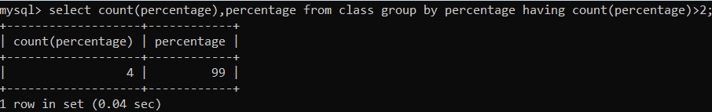

SQL CLAUSES
SQL clause helps us to retrieve a set or bundles of records from the table.
SQL clause helps us to specify a condition on the columns or the records of a table.
Different clauses available in the Structured Query Language are as follows:
- WHERE CLAUSE
- GROUP BY CLAUSE
- HAVING CLAUSE
- ORDER BY CLAUSE
Let's see each clause one by one with an example. We will use MySQL database for writing the queries in examples.
1. WHERE CLAUSE
A WHERE clause in SQL is used with the SELECT query, which is one of the data manipulation language commands. WHERE clauses can be used to limit the number of rows to be displayed in the result set, it generally helps in filtering the records. It returns only those queries which fulfill the specific conditions of the WHERE clause. WHERE clause is used in SELECT, UPDATE, DELETE statement, etc.
WHERE clause with SELECT Query
Asterisk symbol is used with a WHERE clause in a SELECT query to retrieve all the column values for every record from a table.
Syntax of where clause with a select query to retrieve all the column values for every record from a table:
SELECT * FROM TABLENAME WHERE CONDITION;
If according to the requirement, we only want to retrieve selective columns, then we will use below syntax:
SELECT COLUMNNAME1, COLUMNNAME2 FROM TABLENAME WHERE CONDITION;
2. GROUP BY CLAUSE
The Group By clause is used to arrange similar kinds of records into the groups in the Structured Query Language. The Group by clause in the Structured Query Language is used with Select Statement. Group by clause is placed after the where clause in the SQL statement. The Group By clause is specially used with the aggregate function, i.e., max (), min (), avg (), sum (), count () to group the result based on one or more than one column.
The syntax of Group By clause:
SELECT * FROM TABLENAME GROUP BY COLUMNNAME;

3. HAVING CLAUSE:
When we need to place any conditions on the table's column, we use the WHERE clause in SQL. But if we want to use any condition on a column in Group By clause at that time, we will use the HAVING clause with the Group By clause for column conditions.
Syntax:
TABLENAME GROUP BY COLUMNNAME HAVING CONDITION;

4. ORDER BY CLAUSE
Whenever we want to sort anything in SQL, we use the ORDER BY clause. The ORDER BY clause in SQL will help us to sort the data based on the specific column of a table. This means that all the data stored in the specific column on which we are executing the ORDER BY clause will be sorted. The corresponding column values will be displayed in the sequence in which we have obtained the values in the earlier step.
As we all know, sorting means either in ASCENDING ORDER or DESCENDING ORDER. In the same way, ORDER BY CLAUSE sorts the data in ascending or descending order as per our requirement. The data will be sorted in ascending order whenever the ASC keyword is used with ORDER by clause, and the DESC keyword will sort the records in descending order.
By default, sorting in the SQL will be done using the ORDER BY clause in ASCENDING order if we didn't mention the sorting order.
Before moving towards the example of the ORDER BY clause to sort the records, first, we will look at syntax so it will be easy for us to go through the example.
Syntax of ORDER BY clause without asc and desc keyword:
SELECT COLUMN_NAME1, COLUMN_NAME2 FROM TABLE_NAME ORDER BY COLUMNAME;
Syntax of ORDER BY clause to sort in ascending order:
SELECT COLUMN_NAME1, COLUMN_NAME2 FROM TABLE_NAME ORDER BY COLUMN_NAME ASC;
Syntax of ORDER BY clause to sort in descending order:
SELECT COLUMN_NAME1, COLUMN_NAME2 FROM TABLE_NAME ORDER BY COLUMN_NAME DESC;